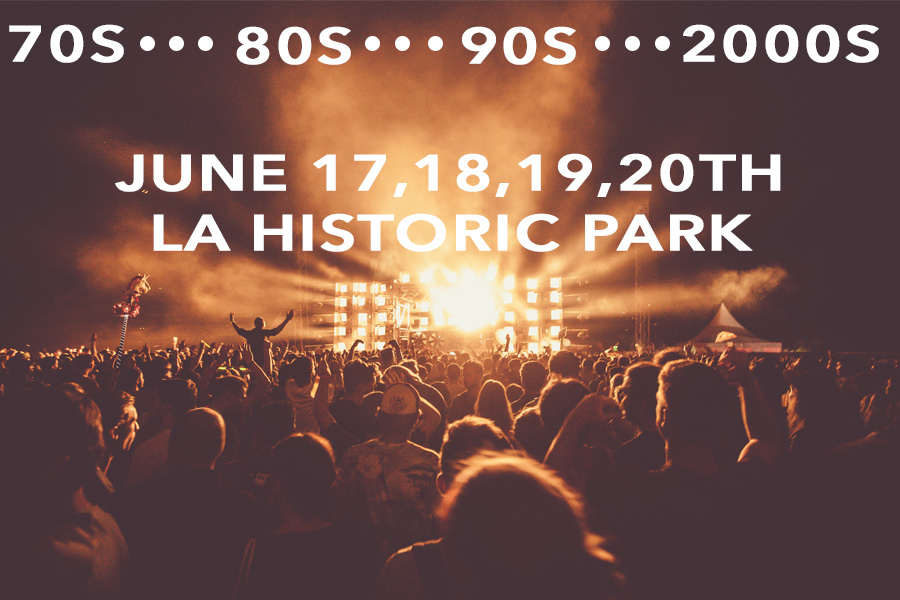

Throwing it back to the best of the 70s, 80s, 90s, and 2000s with music, fashion, art, and food! Come join us at Los Angeles Historic Park to celebrate your favorite decade!!
Here’s how it works- 4 days. 4 decades.
Each day a different decade and everything will revolve around that decade- the music, fashion, art, and food!!! It a way to connect to all generations and bond over the different genres of music.
LET'S GET NOSTALGIC TOGETHER!!